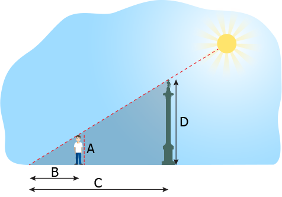
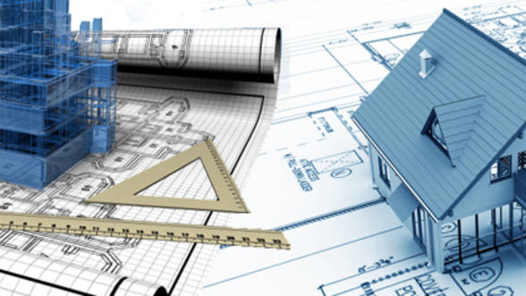
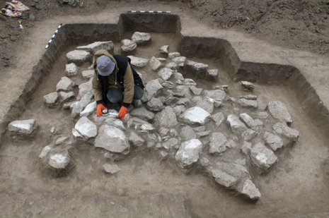
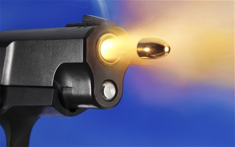
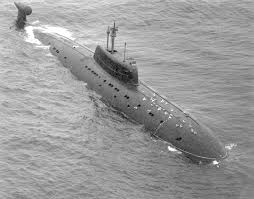

Trigonometria poate fi utilizată pentru a măsura înălțimea unei clădiri sau a unui munte:
dacă cunoaşteți distanța de la care observați clădirea şi unghiul de înălțime, puteți găsi cu uşurință înălțimea clădirii. În mod similar, dacă aveți valoarea unei părți şi unghiul de depresiune din partea superioară a clădirii puteți găsi şi o altă parte a triunghiului, tot ce trebuie să ştiți este o parte şi un unghi al triunghiului.

Trigonometria în construcții:
În construcții avem nevoie de trigonometrie pentru a calcula următoarele: Domenii de măsurare, loturi şi zone; Efectuarea pereților paralele şi perpendiculare; Instalarea plăcilor ceramice; Inclinarea acoperişului; Înălțimea clădirii, lungimea lățimii etc. şi multe alte lucruri în care devine necesar să se folosească trigonometria. Arhitecții folosesc trigonometria pentru a calcula sarcina structurală, pantele acoperişului, suprafețele de sol şi multe alte aspecte, inclusiv umbrirea soarelui şi unghiurile luminoase.

Trigonometria în ingineria zborurilor:
Inginerii de zbor trebuie să țină seama de viteza, distanța şi direcția lor, împreună cu viteza şi direcția vântului. Vântul joacă un rol important în felul în care şi când va ajunge un avion acolo unde este necesar acest lucru este rezolvat folosind vectori pentru a crea un triunghi folosind trigonometria pentru a rezolva. De exemplu, dacă un avion călătoreşte la 234 mph, 45 grade N de E şi există un vânt suflat spre sud, la 20 mph. Trigonometria va ajuta la rezolvarea celei de-a treia părți a triunghiului dvs., care va conduce planul în direcția corectă, avionul va călători cu forța vântului adăugată în cursul său.
Trigonometria în fizică:
În fizică, trigonometria este utilizată pentru a găsi componentele vectorilor, pentru a modela mecanica undelor (atât fizice şi electromagnetice), cât şi pentru oscilații, a însuma puterea câmpurilor şi a folosi produsele dot şi cruce. Chiar şi în mişcarea proiectilă are o mulțime de aplicare a trigonometriei.
Trigonometria în arheologie
Trigonometria este folosită pentru a împărți site-urile de excavare în mod egal în zone de lucru egale. Arheologii identifică diferitele instrumente folosite de civilizație, folosind trigonometria care le poate ajuta în aceste excavări. De asemenea, pot utiliza pentru a măsura distanța de la sistemele de apă subterană.

Trigonometria în criminologie:
În criminologie, trigonometria poate ajuta la calcularea traiectoriei unui proiectil, pentru a estima ceea ce ar fi putut provoca o coliziune într-un accident de maşină sau cum a căzut un obiect de undeva sau în ce unghi a fost o împuşcare cu bullet

Trigonometria în ingineria marină
: în trigonometria ingineriei marine se utilizează pentru construirea şi navigarea navelor marine. Pentru a fi mai specifică trigonometria este utilizată pentru a proiecta rampa marină, care este o suprafață înclinată pentru a conecta zonele inferioare şi superioare ale nivelului, poate fi o pantă sau chiar o scară în funcție de aplicația sa.

Alte utilizări ale trigonometriei:
Este folosit în oceanografie pentru a calcula înălțimea mareelor din oceane. Funcțiile sinusoidale şi cosinuse sunt fundamentale pentru teoria funcțiilor periodice, cele care descriu undele de sunet şi lumină. Calculul este alcătuit din trigonometrie şi algebră. Trigonometria poate fi utilizată pentru a acoperi o casă, pentru a face acoperişul înclinat (în cazul bungalourilor individuale individuale) şi înălțimea acoperişului în clădiri etc. Se utilizează industria navală şi aviatică. Este folosit în cartografie (crearea de hărți). De asemenea, trigonometria are aplicațiile sale în sistemele prin satelit.